source :
Graphical Practice
What’s the proper graphical display’s properties?
- Show the data
- Focus on substance rather than methodology, technology or anything else.
- Avoids distortions
- Coherence over larger data sets
- Encourages eye for comparison of different parts of data
- Reveal different levels of detail: overview to fine structure
- Clear purpose: Description, Exploration, Tabulation or Decoration
- Close integration to verbal and statistical descriptions of data set.
Issues with Data Maps
- Census related information gets missing in most of the plots.
- Data Collection in Different locations might be done differently.
Narrative Graphics of Space and Time
The additional dimensions such as width can be added to the plot without making user aware of the complex number of dimensions and to visualize the underlying concept with ease.
Numbers vs Tables
Go with numbers and tables when there are less than 20 numbers or so in the dataset. The power of visualization comes only with a relatively larger sized dataset.
Ways to enhance graphical integrity
- The representation of numbers, as physically measured on the surface of graphic itself, should be directly proportional to the number of numerical quantities represented.
- Clear, detailed and thorough labeling to defeat ambiguity and distortion. Explanation of data on the graphic itself. Label important events in the data.
Lie Factor
Lie factor is the ratio of size of effect shown in graphic to the size of effect in data. If lie factor is less greater than 1.05 and lesser than 0.95; it indicates substantial distortion.
Usual Hacks people do
- Using extraneous decorations over simple graphics.
- Using lie factor to inappropriately put data into reader’s perspective.
Design and Data Variation
Each part of graphic creates visual expectations of it’s other parts thus deception may occur through incorrect extrapolation of visual expectations generated on one place on the graphic to other places.
Sometimes, the design can be varied to furtively imply something that there is not. People might try to change scales without reader acknowledging of such change.
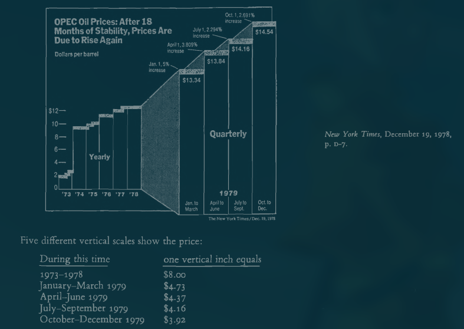
This graphic clearly shows that the data is being distorted with changes in vertical scale here. Also, the horizontal scale changes from rest of the years to 1979. With such change, the overall distortion will be multiplicative. The intention may not be bad but the interpretation that comes from it will definitely be.
Sometimes, the chart may be made taller than wider or vice versa to emphasis on increase in one scale and this is also a misleading way of plot.
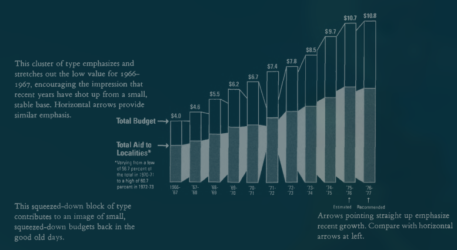
A much calmer view would look like this.
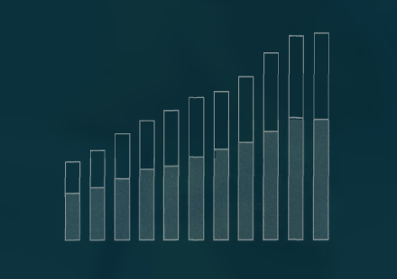
Also, there are two statistical lapses biasing the chart:
- Population increase by 10% paralleling the budget growth.
- Period of substantial inflation not taken into account
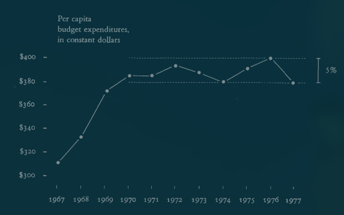
This chart here is for the same thing. Instead of plotting the whole budget, it takes into account the Per Capita and also the money values are in constant dollars. Now, the perspective looks entirely different.
Visual Area and Numerical Measure
Using areas to show one-dimensional data is also a way to distort data. People generally convert such perception into one-dimensional number which doesn’t reliably produce appropriate proportional changes in perceived areas.
Examples of general mistakes:
- Representing numbers as areas: e.g. Playfair’s population represented as circle.
Context for Graphical Integrity
“Compared to what” must be the question at heart to be truthful about the data. Graphics must not quote data out of context.
Summary
- The representation of numbers, as physically measured on the surface of the graphic itself, should be directly proportional to the numerical quantities represented.
- Clear, detailed, and thorough labeling should be used to defeat graphical distortion and ambiguity. Write out explanations of the data on the graphic itself. Label important events in the data.
- Show data variation, not design variation.
- In time-series displays of money, deflated and standardized units of monetary measurement are nearly always better than nominal units.
- The number o f information-carrying (variable) dimensions depicted should not exceed the number of dimensions in the data.
- Graphics must not quote data out of context.
Theory of data graphics
Statistical Graphics should help people reason about quantitative data in context rather than artful designs.
Data Ink
Large share of ink on a graphic should present data-information, the ink changing as data change. Data-ink ratio is defined as the ratio of used data-ink to the total ink used to print the graphic. It is simply [ 1 - proportion of graphic that can be erased without loss of data information]. Only a few graphics make use of every drop of ink to convey measured quantities.
Principle
-
Erase non-data ink, within reason. Erase redundant data-ink within reason.
Remove redundant data ink such as numbers above the bar when they are already labelled along the axes. Bilateral symmetry of data measures also creates redundancy. But some redundancies can help give order to complexity and facilitate comparisons. Example is Marey’s 1880 train schedule.
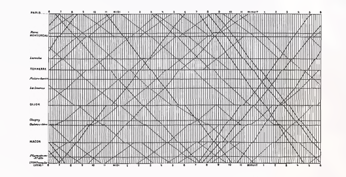
Some examples and comparisons
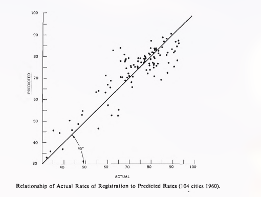
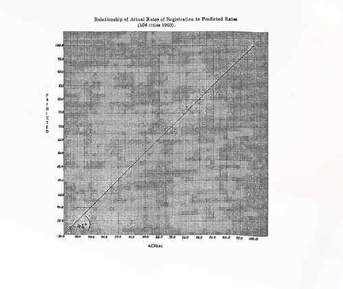
These both plots are the same and can be understood clearly about the use of data ink. The first one is a lot cleaner than the second one.
Chart-junk
Unintentional Optical Art
Don’t use things like moire’s effects as they tend to make you focus on something else when the focus should be on the data itself. Vibrating chart-junk often frequents scientific journals but is not favorable.
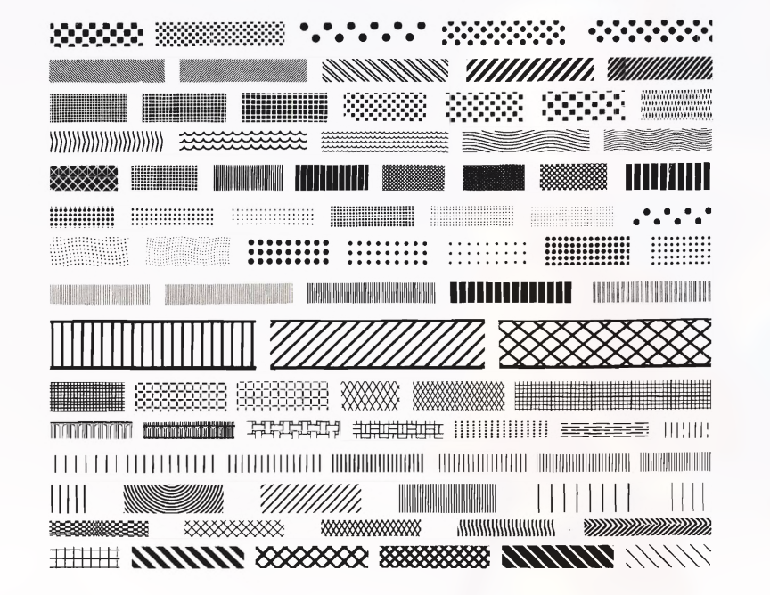
Moire’s vibrations cannot be tamed; so has no place in data graphical design.
The Grid
Grid is usually be muted or completely suppressed so that it’s presence is only implicit.
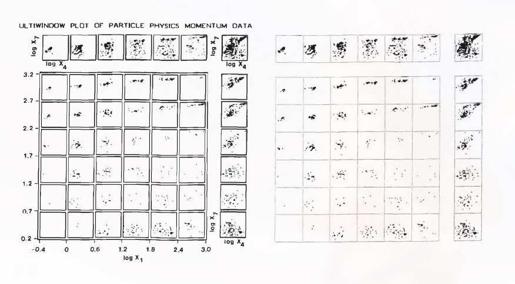
Here the window mode is usually not favorable and need to be replaced with simple lines which avoids the vibration due to the window mode in the first plot.
When you cannot avoid grid, thinning the grid lines can be a big rescue. So, better use a gray grid that goes along with data and doesn’t disturb it.
Self Promoting Graphics: The Duck
When graphic is taken over by decorative debris, the graphic may be called the “Big Duck” It is alright to decorate construction but never construct decoration. This is a profound statement. Often times you feel the need but it’s just exaggeration and serves nothing to the purpose or the meaning or even the artistic fealty to it.
Data Ink Maximization and Graphical Design
Different ways of showing same box plot
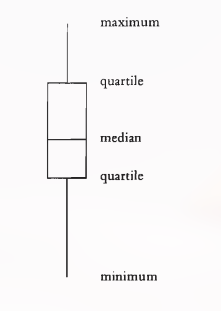
Different ways of showing bar graph
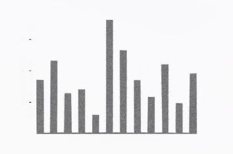
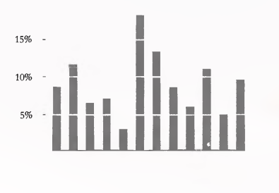
The last one shows the scales, is easier to read the values and also shows coordinate lines more clearly than with just the ticks. One step further would look like this: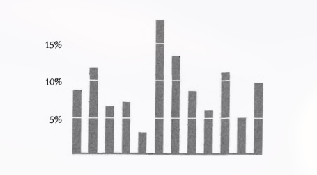
The axis lines would mean nothing for reference since we already have white strips along the bars.
Different ways of showing scatter plots
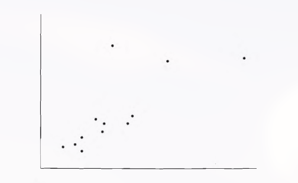
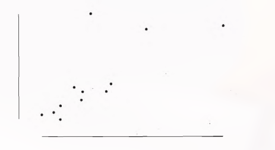
This trimming off axes means that the part of frame exceeding the data is trimmed off. This can be useful to convey information about data. This shows minimum and maximum range for both axes clearly.Multifunctioning Graphical Elements
Mobilize every graphical element, perhaps several times over, to show the data.
The danger to such elements is people get confused with such implications. The designs must enhance clarity when using such elements.
Data-Built Data Measures
Graphical element that actually locates or plots the data is called data-measure. e.g Bars of bar chart, dots of scatter plot and so on.
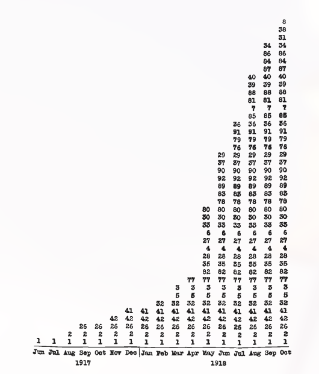
This plot actually uses the data to represent data. This data measure shows:
- Number of divisions in France for each month
- What particular divisions were in France in each month
- Duration of each division’s presence in France
Double Functioning Labels
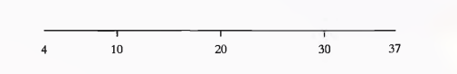
This label here will work as a range: is cleaner and ticks are properly managed as well.
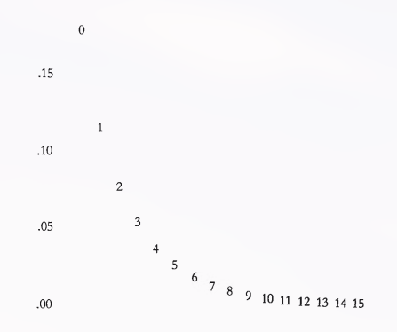
Sometimes, the order and index can be clearly identified with different numbers as well.
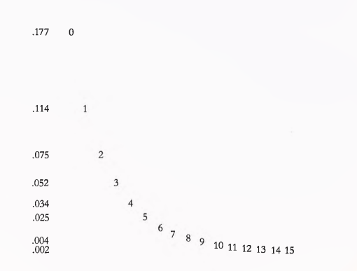
You can make Y-scale more flexible to identify the exact numbers related to the points on the right by taking Y-scale as per those measurements.
Puzzles and Hierarchy in Graphics
Clear sign of puzzle in graphics is when the explanation should be done verbally rather than visually.
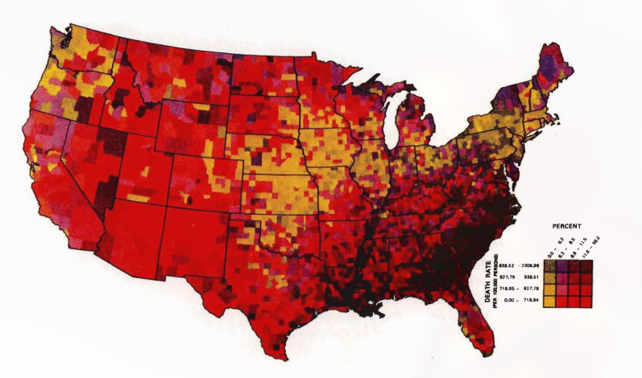
The 16 grid colors used in the plot above makes it very difficult for the viewers to clearly explain the phenomenon and people will likely require words to complete this puzzle.
Instead of using numerous colors, using different shades of grey leads to communication of more complex information with ease.
Multiple layers of information are created by multiple viewing depths and multiple viewing angles.
Graphics can be designed to have at least three viewing depths:
- What is seen from a distance, an overall structure usually aggregated from an underlying micro-structure
- What is seen up close and in detail, the fine structure o f the data
- What is seen implicitly, underlying the graphic—that which is behind the graphic.
Data Density and Small Multiples
Our eyes can detect large amount of information in small spaces. But how much information should the graphic show?
Data Density of graphic = Number of entries in data Matrix / Area of data graphic
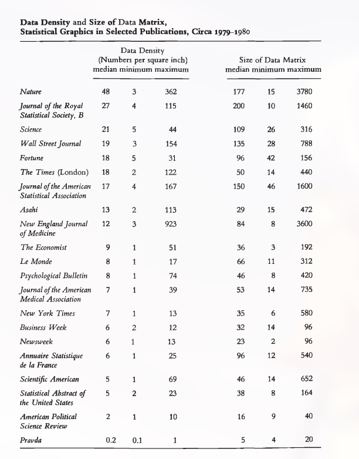
This table shows the data density of different publications. Data graphics should be based on large data matrices and high data density. But note that as the volume of data increases, the data measures must shrink(e.g. thinner lines for busy time series, smaller dots for scatter plots ).The cost of chart-junk, non-data-ink and redundant data ink is even more in such data-rich designs.
Graphics can be shrunk way down. Use this principle to shrink the graphs as much as possible.
Many data graphics can be reduced in area to half their currently published size with virtually no loss of information or legibility.
Well designed small multiples are:
- comparative
- multivariate
- shrunken, high density graphics
- Usually bases on a large data matrix
- Drawn almost entirely with data-ink
- Efficient in interpretation
- Often narrative in content: showing shifts in relationship between variables as index variable changes.
Final Words: For non-data-ink, less is more. For data-ink, less is a bore.
Aesthetics and Technique in Data Graphical Design
Graphical elegance is often found in simplicity of design and complexity of data.
Visually attractive graphics also gather power from content and interpretations beyond the immediate display of some numbers.
What do attractive displays have in common?
- Properly chosen format and design
- Use words, numbers or drawing together.
- Reflect a balance, a proportion, a sense of relevant scale.
- Often have a narrative quality: story to tell about the data
- Drawn in professional manner: technical details of production done with care.
- Avoid content free decoration: including chart-junk.
Choice of design: Sentences, Text-tables, Tables, Semi-graphics and Graphics
Often use two or three of these devices: sentence, table and graphic to show your data.
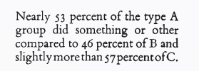
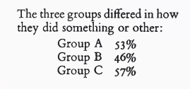
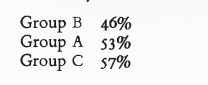
There are different ways to write the same thing. You don’t just write many words to describe something when it can be done precisely by being succinct.Table is nearly always better than dumb pie chart.
Tables also work well when the data presentation requires many localized comparisons. One supertable is far better than a hundred little bar charts.
Making complexity accessible: Combining words, numbers and pictures
Data graphics are paragraphs about data and should be treated as such.
Same typeface should be used for text and graphic, also ruled lines that separate different types of information should be avoided.
Use of words and pictures together requires special sensitivity to the purpose of design: whether graphic is used for communication/illustration of the finding or exploration of a data set.
Accessible Complexity: Friendly Data Graphic
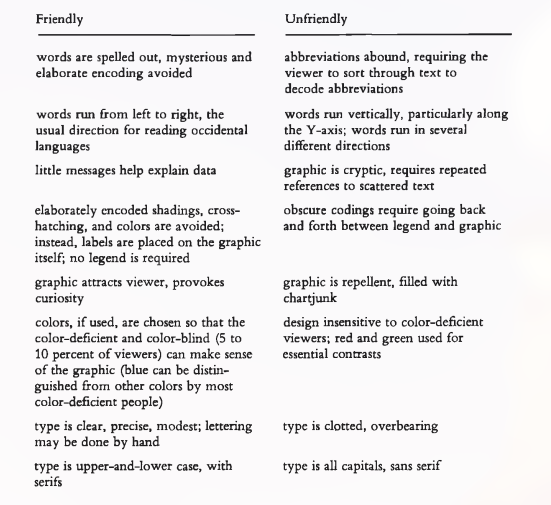
The more the letters differ from each other, easier is the reading. Words consisting of only capital letters are most difficult to read because of same volume, width and height. When comparing serif with sans-serif, the latter provides an uneasy reading.
Proportion and Scale: Line weight and Lettering
- Lines in data graphics should be thin.
- Data Graphics can be enhanced by perpendicular intersection of lines of differing weights. The contrast in line weight means contrast in meaning.
- Greater meaning is given to line with greater width. So, the data line should receive greater width than the connecting verticals.
Proportion and Scale: Shape of Graphics
- Graphics should tend towards the horizontal, greater in length than height.
- Our eyes are naturally practiced in detecting deviations from horizon.
- Emphasis on causal influence since it is generally used across horizontal axis.
- Ease of labeling
- Plots are good when they are wider than tall. Smoothly changing curves can stand being taller than wide but a wiggly curve needs to be wider than tall.
- Golden rectangle is wider than tall.
- Shaded high contrast display might occasionally be better than the floating snake.
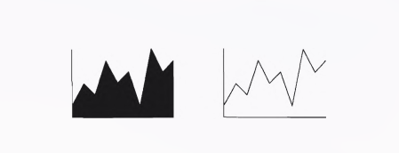